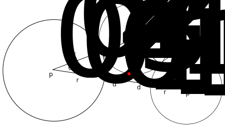

$$ \begin{align*} \vec{v}_0 &= p_1 - p_0 & \text{calc v0} \\ \\ d_0 &= \frac{r_0}{r_0 + r_1} * (\|\vec{v}_0\| - (r_0 + r_1)) \\ d_1 &= \frac{r_1}{r_0 + r_1} * (\|\vec{v}_0\| - (r_0 + r_1)) \\ \\ a^2 + b^2 &= c^2 \\ b^2 &= c^2 - a^2 \\ b^2 &= (r_0 + r_2)^2 + -(r_0 + d_0)^2 \\ b^2 &= (r_1 + r_2)^2 + -(r_1 + d_1)^2 \\ \\ (r_0 + r_2)^2 + -(r_0 + d_0)^2 &= (r_1 + r_2)^2 + -(r_1 + d_1)^2 & \text{calc r2} \\ 2r_0r_2 + -2r_0d_0 + -d_0^2 &= 2r_1r_2 + -2r_1d_1 + -d_1^2 \\ 2r_0r_2 + -2r_1r_2 + -2r_0d_0 + -d_0^2 &= -2r_1d_1 + -d_1^2 \\ 2r_0r_2 + -2r_1r_2 &= -2r_1d_1 + -d_1^2 + 2r_0d_0 + d_0^2 \\ 2r_2(r_0 - r_1) &= -2r_1d_1 + -d_1^2 + 2r_0d_0 + d_0^2 \\ r_2 &= \frac{2r_0d_0 + -2r_1d_1 + d_0^2 + -d_1^2}{2(r_0 - r_1)} \\ \\ \hat{n}_0 &= \frac{\vec{v}_0}{\|\vec{v}_0\|} & \text{normalize v0} \\ \\ \cos{\theta} &= \frac{r_0 + d_0}{r_0 + r_2} \\ \sin{\theta} &= \frac{\sqrt{(r_0 + r_2)^2 - (r_0 + d_0)^2}}{r_0 + r_2} \\ \\ \vec{v}_1 &= \begin{bmatrix} \cos{\theta} & -\sin{\theta} \\ \sin{\theta} & \cos{\theta} \end{bmatrix} \hat{n}_0 & \text{calc v1} \\ \hat{n}_1 &= \frac{\vec{v}_1}{\|\vec{v}_1\|} & \text{normalize v1} \\ \\ p_2 &= p_0 + (r_0 + r_2)\hat{n}_1 & \text{calc p2} \\ \\ \vec{v}_2 &= -(p_2 - (p_0 + \hat{n}_0(r_0 + d_0))) & \text{calc v2} \\ \hat{n}_2 &= \frac{\vec{v}_2}{\|\vec{v}_2\|} & \text{normalize v2} \\ \\ p_3 &= p_2 + r_2 * \hat{n}_2 & \text{calc p3} \end{align*} $$